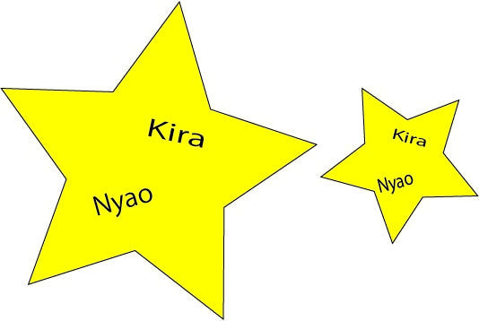
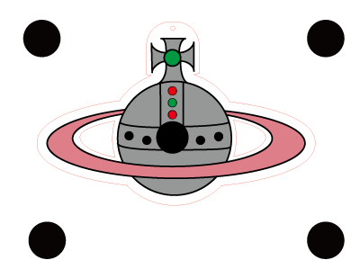
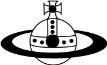
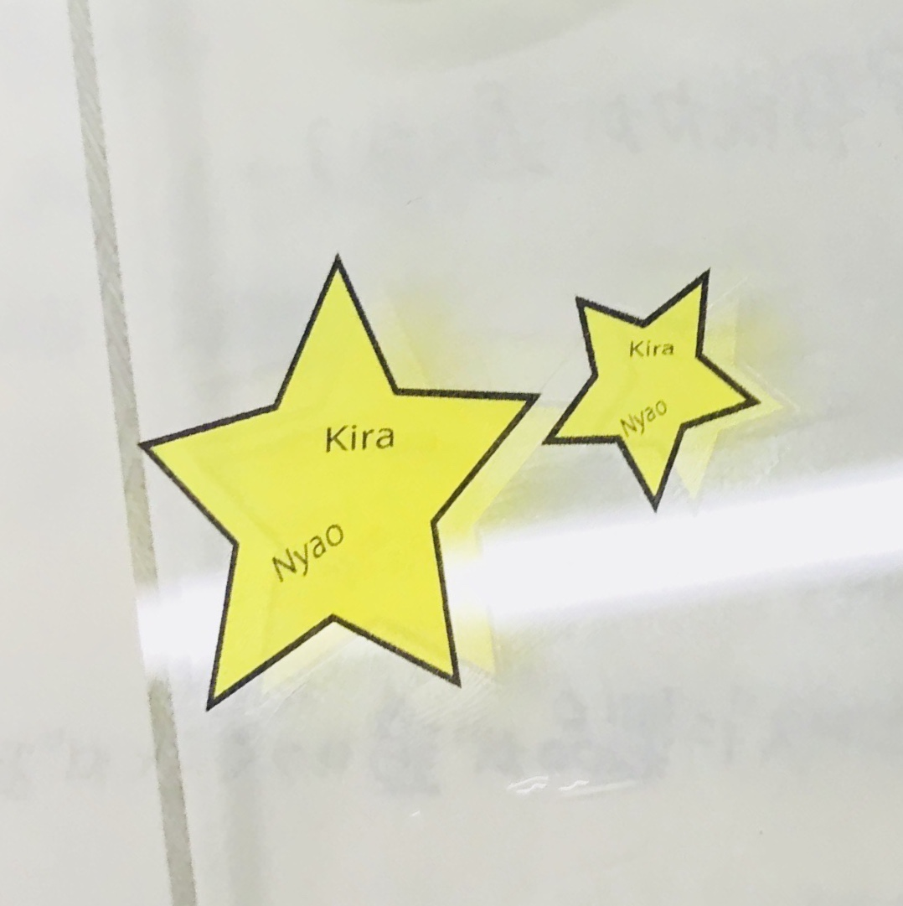
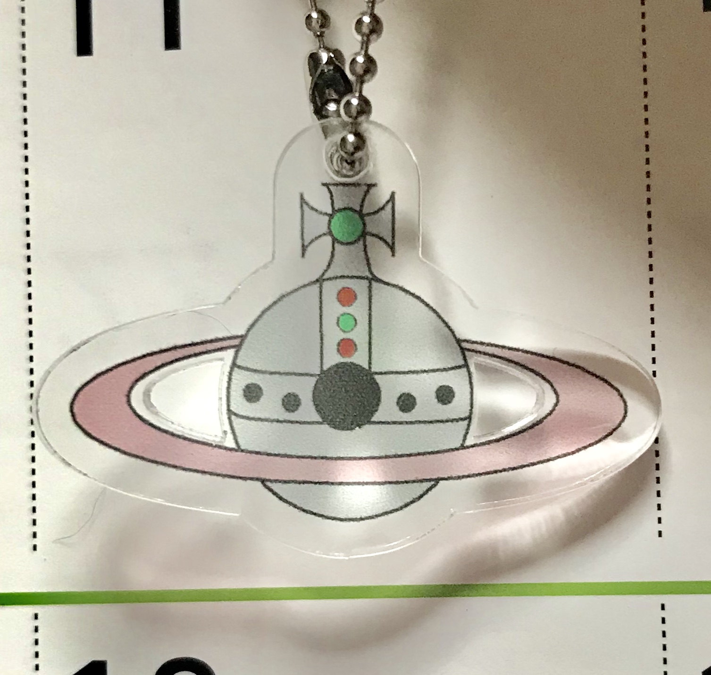
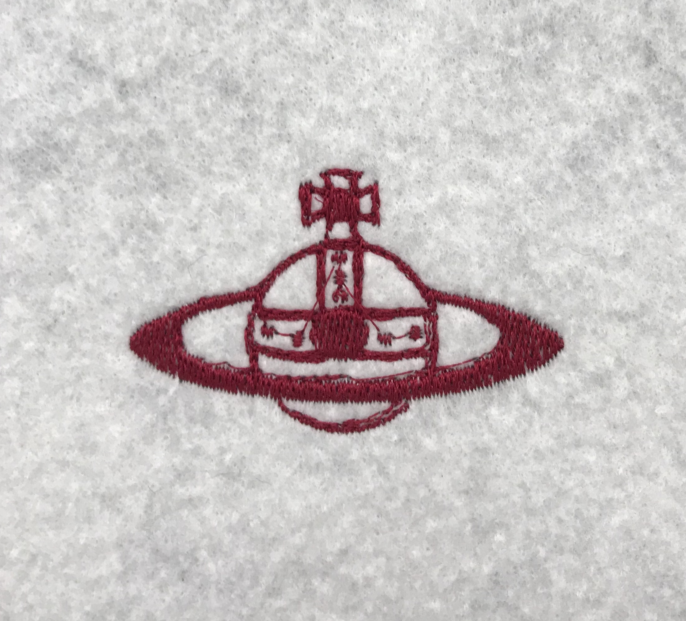

*素材学習＊UVプリンター＊カッティングプロッタ＊
fabble
drive






見てわかる通り、イラストレーションで作ったデータが上の画像、データを元に形になったものが下の画像です。
・私の班はUVプリンターとカッティングプロッタを使いました。
左の変な星の形をしたのが、まず始めに適当でいいからデータを作ってみようってなって作ったものです。
少し適当すぎました。
・次に右の土星の形をしたのが本番用（？）に作ったデータです。
これは私の好きなヴィヴィアンというブランドです。
パソコンが苦手でしたが、このデータを作ったことで色々いじくったので
できることが増えました！やったぁ〜〜〜っ！！
今回機械を触って何か作ったのは初めてで、ちゃんとできるかな〜と少し心配だったけど、
何回か同じことをしていたら覚えてきたので、繰り返しすることが大事なんだなと思いました。
UVプリンターを使って思ったことは、毎回インク漏れが多いから作業をする前に必ず確認をして、
クリーニングすることが大事だなと思いました。
・カッティングプロッタは、とにかく早い！！！
カットするスピードの速さに驚きました。
キーホルダーを作るときに開ける穴が小さすぎるとカットしても穴がちゃんと開かないので、
小さすぎず大きすぎず、適度な大きさの穴を開けるようにしないと、
またUVプリンターのところからやり直しになってしまいます。
・他のチームの機材を使って制作するものに、私はデジタル刺繍ミシンを選びました。
ヴィヴィアンのロゴマークで何か作りたいと思っていたので、
自分のチームと他のチームのデータは同じものを題材にしています。
デジタル刺繍ミシンで使える色は一色だけだったので、ワインレッドのような色合いのものにしました。
これはとても好みの色でした！
デジタル刺繍ミシンは１回で成功したので良かったです。
とても満足のいくものになったけどひとつだけ言うとしたら、
この縫い方は全部繋がった縫い方をするので、独立した丸い形を縫うところは線が繋がっているので
少し改善したい点だなと思いました。